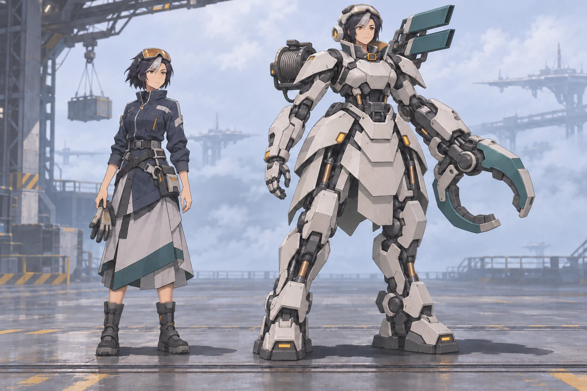

断航线暂名
风暴切断了高空货运。穿上救援外骨骼，去七码吊港拖回货舱，拆掉失控吊机，接通航标。

立项与分工
「断航线」为暂名。第一关「七码吊港」验证一套新的玩法。玩家操作穿戴式救援机甲，在失控的高空货港救回航标组件。拆掉吊机哪一个部件，会立即改变它的下一招和玩家能走的路。
参考图与原创新作
已在用户的 ChatGPT 对话《创意角色结合》逐张看过 5 张图，其中有雷电将军、刻晴和两张娜维娅的单人设计。群像的碎甲和光束会吞掉轮廓。后几张的单人全身、可辨识的脸、两三块大的甲片和集中配色更适合作为方向。传统机甲的背包结构、承重脚掌和能解释用途的关节也值得保留。
首位驾驶员岑遥用同一个人物身份做两态。常服是护目镜、短发和斜叠工装裙。出勤是露出人脸的贴身救援外骨骼，有分片护裙、前臂牵引钳、偏置绞盘和醒目的散热片。冷白装甲配石墨骨架，少量矿青和琥珀用来标记机件。概念稿存在本目录，生成提示与修订记录相邻。旧图留作私下研究。原创新作使用新的角色、机甲轮廓、地名和符号。
只有通过灰盒的镜头和动作才开始制备运行素材。岑遥先交三分之四视图与正背转面，再分成头脸、机身、肩、夹爪、绞盘、护裙、腿和底座，给出统一接地位置和关节轴。吊机先交可读的吊臂、绞盘和停机面板三件，制作完整、暴露、拆除、停机状态。实机尺寸下要能看见警示、夹爪位置和坏掉的是哪一件。概念稿先核对形象和材质，游戏贴图另按屏幕视角制作。
一局怎么玩
- 机库接短任务，驾驶岑遥出勤。推进由玩家操作触发，战斗区域使用固定斜俯视，先把手指附近的空间留给走位。
- 单拇指拖动走位，松手撑脚，按住同一个操作键挂货、拆件或断电。前 30 秒让玩家亲手挂住并拖动货舱。
- 将货舱拖回接货架，救出航标替换件。进入吊机场后，玩家看预警并选择先拆吊臂还是绞盘。拆吊臂会消掉大扫击，拆绞盘会消掉牵引。两件都拆完再靠近检修台停机，最后接通航标。
- 首胜回收制动模块。它缩短撑脚准备，牺牲一点横移速度。回机库可随时换回初始件，然后再打同一关比较。
第一次通关目标 4–6 分钟，首轮只做一位出勤驾驶员、一个调度员、一台玩家机甲、一台首领和一个可换装模块。随后根据首关试玩确定要先做哪位新驾驶员和哪条航线。
分工和依赖
| 工作 | 已形成的交付 | 下一步 |
|---|---|---|
| 世界观与角色 | 《世界观与首关》含岑遥、许棠、七码吊港与两名后续驾驶员草案 | 把首关电台台词整理到四个任务触发点。随灰盒节奏删减对白。 |
| 玩法与关卡 | 《第一关玩法设计》含触控、节拍、两路拆件、重试点、挂件和验收指标 | 制作单拇指灰盒，测第一次拖货、预警时间和两种拆件顺序。 |
| iOS 与 QA | 《机甲新作技术方案》完成现有工程的复用审计 | 建独立 iOS 工程、存档和测试配置。用 Swift 写关卡状态，SpriteKit 负责分层机甲和场地。 |
| 美术与声音 | 已看旧图并制作岑遥双态概念稿 | 概念与灰盒合拢后做转面、刚性分件和场景层。为走路、撑脚、锁扣、扫击、卷绳、断电各给一组易区分的声音。 |
先做关卡灰盒，美术同步定轮廓，代码可并行准备平台壳和声音事件。首轮以 5 名新玩家为样本，至少 4 人在 30 秒内能把货舱拖动，至少 3 人在 6 分钟内通关。看完拆件能说出哪个威胁消失。iPhone 验证单手操作，iPad 验证视野、左右手布局与触区。只有镜头和规则通过后才批量出人物、场景和装甲。
灰盒初估 2–4 人日，带原创视听与验收的单关切片约 11–19 人日。独立工程可和现有《星渡》并存。仍以原生、竖屏、离线单人为首轮假设，修改按影响选定向测试，导出结果后卸载专用模拟器里的试玩 App。新作内部试玩使用独立的 App 记录和测试组。
世界与驾驶员
风暴过后的航路
一次持续数月的行星风暴切断了高空货运。浮城仍有电，原来连接各城的牵引线和航标大多失联。从一座城去另一座城，需要根据实地风向开出短暂的通行窗口。小型拖船趁窗口送人送货，平时由驾驶机甲的打捞队穿过受损的港区，固定货物、停掉失控设备、重新校准机械航标。航标重新摆正只是第一步，还得有调度员确认哪一段线承得住下一艘船。
城市里的人对恢复航路有各自的理由。小站想把水过滤设备送上常规货班，主港想先恢复最繁忙的通道，原先看守无人设备的维修员希望沿途有人接班。旧设备仍把遇险时下发的指令当成现行命令。驾驶员要在现场读懂它们正在做什么，才能在继续作业和手动停机之间做决定。
港区的救援机甲是贴身外骨骼，着装后约 2.6–2.9 米高，能在吊架下转身，也能借通用挂架拖动货笼。前臂工具、腰背牵引和脚部支撑三个部件各有可见的动作。维修后可以在机库看回收件装在哪、测试它做什么，再带进一局。首关的制动单元缩短撑脚后的准备时间，代价是最高移速降低。玩家可以在下一趟比较等窗口贴近与提前绕背的区别。
首位驾驶员
岑遥｜港口救援拖手
岑遥在外环的维修码头长大，会从绳索抖动的方向判断货笼落点。第一次在机库见到她时，她穿着前短后长的蓝灰工装裙，肩上斜挎工具带，正把琥珀色护目镜推到额头，蹲下来量损坏的导轨。出勤时她穿上敞面头盔和分片护裙，短发、露出的脸和琥珀色护目镜依然可辨。她先单脚撑住甲板，再检查前臂工具和腰背牵引扣，机库里的准备动作也让玩家认出下场要用的三个部位。
几年前，风暴来临前最后一次拖曳里，调度员许棠按当时能看到的载荷，要求岑遥切开货索。岑遥等了半拍，想抓住被吹离导轨的货笼，结果两台机器一起撞坏了接货架。那只货笼是空的，新的货架却一直没运来。岑遥此后习惯多留一个能接回去的位置，许棠习惯先给人听得清的限时指令。现在她们要一起把七码吊港重新打开。许棠在电台上报停机窗口，岑遥用机甲把可行的落位实际摆给她看。首关让这份配合发生在玩家操作里。
两位后续驾驶员
| 人物 | 工作与选择 | 工装与出勤轮廓 |
|---|---|---|
| 桑澄，风标检修员 | 会抢在窗口关闭前上塔，想优先恢复那些一直排不上回程货班的小站。她提供一条更直接的航路和一处中途可停靠的维修台。 | 长辫盘在一侧，浅色系带工装裙，外骨骼窄而高，背部有可折叠的双向测风叶。 |
| 顾芩，前重载领航员 | 坚持按载荷给车辆排队，答应每次航行给伤病乘客留出一只空舱。她可以在工程允许范围内提出改线，挑战玩家对护送和维修顺序的安排。 | 厚刘海、方框镜、宽领深红工装裙，方肩外骨骼带一副可放下的宽底支撑架。 |
首个可玩版本只需岑遥的两态和许棠的电台。另两人的岗位决定后续任务方向，形象和外骨骼可以随首关试玩结果细化。
首关 · 七码吊港
半悬的货笼装着航标的替换组件和外站要用的水泵密封件，靠最后一节导轨吊在空中。自动牵引机读不到正确的货笼落位，持续执行回收程序。它的吊臂反复扫向落位区，侧面的绞盘把碰到的东西拉回去。两种动作的危险区域和安全窗口都由部件运动产生。
| 段落 | 玩家动作 | 画面与剧情 |
|---|---|---|
| 出发 | 从机库直接出击。 | 许棠把修过的吊港平面图钉在台上，指向夹在两段导轨间的货笼。「航标件在里面。挂稳，就拉。」 |
| 接笼 | 靠近货笼接驳，把它拖入侧边接货架。给足空间让玩家先练一次接驳和移位。 | 货笼沿绷紧的缆线跟随机甲，进入架位后四角卡爪合拢。远处吊臂扫过空导轨，玩家在到达交战区域前就看到整段动作。 |
| 看清部件 | 顺着空档靠近牵引机，从当前站位选择优先拆吊臂或绞盘。 | 吊臂在回转前抬起，扫过的扇形轨迹保持清楚。绞盘亮起张紧指示，绳索拉直后才收缆。两个部件分别有可见受损变化，外形和运动共同传达危险。 |
| 停机 | 吊臂先拆会留下绞盘牵引，绞盘先拆会留下吊臂扫击。处理第二个部件，再到亮起的检修台按住停机。 | 拆掉的部件立即失去原来的动作。停机后留出一段机械惯性收势，松掉的钢缆垂直落下。 |
| 返航 | 回到已经对接的货笼，用替换组件接通航标。带剩余的货和制动单元回港。 | 许棠报「接回来了。下一艘能进港。」远处另一艘送货船驶过航标。机库开放制动单元试装。 |
第一次出勤以约 4–6 分钟为目标。玩家先稳住货笼，过桥时练一次拆卸，再观察一轮吊机动作，拆完两件、停机、接通航标。初始外骨骼具备必经操作，两种拆件顺序都能完成任务。回港只呈现这次运回的东西和能安排的下一趟。人物对话留短句，随准备、动作完成和恢复通行触发。
首关要能在手机上读清楚
- 先用方块搭出靠近货笼、接货架、吊臂扫角和绞盘牵引线。试玩后按机甲有效碰撞宽度和一拇指可达移动距离调整安全窗口。
- 同一画面里货笼靠形状与四角卡爪辨认，危险部件靠外形、蓄势和实体轨迹辨认。把场景高亮集中在卡爪落位与部件预警。
- 镜头只在出发和返航时停下来给人脸和装配细节。交战时维持原位置和视野，简短电台提示放在安全空档。
- 试玩时先观察玩家能否在没有口头指导的情况下救货笼、认出两种威胁，以及能否说清自己拆掉的部件改变了什么。反馈回到关卡和机体设计，再确定下一批人物和装配。
首关怎么玩
岑遥穿着约 2.6–2.9 米高的救援外骨骼落在失联的七码吊港。人物本体可见，手臂外侧的机械支架操作牵引和拆卸工具。调度员许棠为她接通货轨。玩家先拖回装有航标组件的货舱，再拆掉失控吊机的吊臂关节和牵引绞盘，最后靠近检修台停机。第一次出勤预计 4–6 分钟。竖屏斜俯视、分区定镜头、原生 iOS 离线单机，关卡推进由玩家触发。
核心操作
玩家的一次决策是选位置、稳住机体、动手。左侧接近吊臂可以先消掉大扫击，右侧接近绞盘可以先消掉拉扯。剩下的部件决定下一段怎么走位。
| 操作 | 屏幕行为 |
|---|---|
| 战区内单指相对拖动 | 首触点为摇杆中心，距中心 6pt 内原地站稳，到 32pt 达满速。机体在 0.16 秒内加到步速，转身时脚步和上身有不同的节奏。 |
| 抬手或回到摇杆中心 | 约 0.14 秒内撑脚站稳。机体下压脚垫，目标轮廓和操作键同时亮起。 |
| 拇指移到操作键，按住直至工具生效 | 按住后从站稳开始计时。牵引点扣挂 0.30 秒，暴露关节打入拆卸楔 0.42 秒，检修台停机 0.70 秒。工具在阈值到达时触发一次，提前抬手撤销进度。 |
| 拖动已挂好的货舱 | 货舱沿轨跟随。玩家转身可以缓行或绕开风口。拖入对接框自动锁住和解挂。 |
同一次触摸由起点决定归属，战区拖动滑过操作键时依然移动。操作键按住期间站稳，被击退时撤销当前充能，抬手后即可立刻走位。操作键用 64pt 触区，右手默认在右下安全区，左手模式镜像。战区可从拇指容易触达的地方发起拖动。HUD 保留玩家四格护甲、暂停键、首领在场时的两段部件进度。每次命中除掉一格护甲，并免伤 0.65 秒。护甲耗尽后回到最近的检查点。
灰盒尺寸和时序
D是外骨骼落地时的碰撞直径，用作灰盒相对单位。首版步速 3.4D/s，拖货 1.8D/s，作用距离 1.35D。标准手机上机体画面轮廓约占可玩宽度的 1/8，吊机约占 1/3，两者的接地阴影标出碰撞中心。- 竞技区有效宽 8D、纵深 11D。两条安全绕行通道各宽至少 1.8D。最近掩体到可操作站位的路线不超过 1.8D。绞盘和吊臂的可拆站位至少相隔 2D，操作开始时锁定当前目标，避免附近的另一个部件接走动作。
- 敌方起手至少 1.05 秒。首次进入场地，每种攻击的第一招预警 1.25 秒。预警轮廓先出现，再响起能区分铁臂与绞盘的声音。扫击只有在吊臂实际经过的 0.28 秒伤人。绞索仅在轨道条内牵人，横向离开条带即可脱身。正常闪避依靠走位。
- 短促顿挫和液压回弹由动画表现。命中零件时，落锤声与机甲局部 45 毫秒的动作停顿一起触发。镜头固定，输入和危险区继续计时，预警始终可读。
从最近掩体出发，按较慢的 3.0D/s 计算，走 1.8D、加速 0.16 秒、撑脚 0.14 秒、留拇指换位 0.30 秒、蓄力 0.42 秒，共 1.62 秒。1.8 秒暴露窗留有余量。试玩时用实测走位复算，优先延长窗口或移动掩体。
一局流程
以下为第一次试玩的节奏预算。各段按动作推进，超时也能继续操作。港口的白色货轨指向目标，青色标记可操作部件，琥珀色斜纹预警攻击，三者用轮廓和图形区分。
| 预算 | 玩家做什么 | 反馈 |
|---|---|---|
| 0:00–0:30 落地 | 沿亮轨走两三步，停在舱边，按住操作键扣挂，回拖一个机身 | 第一次听见脚步、撑脚、卡扣三个声音。货舱实际跟随。许棠说完「挂稳，就拉」后让出画面。 |
| 0:30–1:30 回收 | 沿三个各约 8D 的轨段把货舱拉到对接位，经过一处周期排风口和一道需要绕到挡板背面的弯。冲风会把货舱推回最近的止退点，玩家可以立刻重新拉紧 | 站到安全侧等风，或在风停后满速通过。货舱在冲风时退到上个止退点。 |
| 1:30–2:15 过桥 | 走上货舱对接后的栈桥。经过一块上岸检修盖，用同样的按住动作拆开，先在无伤害情形听到金属拆卸声；绕开一次吊港空载调头的扫幅 | 玩家提前练到首领拆件使用的瞄准、撑脚与蓄力。抵达台前短暂停稳、恢复机体，建立首领重试点。 |
| 2:15–4:35 停吊机 | 观察两种预警，选靠左或靠右的开局，进入冷却中的关节站位。拆掉两个部件，再把检修台开关压到底 | 吊机作业范围实时缩小，停机后光、声、姿态一起落下来。第一次接触至停机希望 90–140 秒。熟练玩家有缩短一半的余地。 |
| 4:35–5:00 接通航标 | 回到已经对接的货舱，和许棠交换一句短对白，接通原定航线，领取制动单元 | 结算后可以回机库换件并立即返练习。 |
灰盒先铺好一条连续的通行路线，货舱两侧各留一处退位。对接前从落地点重试。进入首领战后，重试从吊机门口开始，并恢复机体与环境到该段初始状态，保留已对接的货舱。暂停和切后台冻结敌机、牵引和拆件时序。恢复时必须重新触按，避免继承上一帧的手势。
吊机行为
首领是一台在错误执行卸货循环的自动吊机。上沿显示两段部件进度，吊臂轮廓图在左，绞轮图在右。完成重动作后，同一部件打开检修面 1.8 秒，适时贴近才能拆卸。打入拆卸楔会卸下一道锁扣，并让检修面收回。每处两道锁，第一道脱落露出最后的机械锁，第二道脱落时该机构断开。未赶上窗口就退回掩体，等下一轮。
| 部件 | 完整时的行为和破口 | 拆掉后 |
|---|---|---|
| 吊臂关节 | 半扇形扫击。扫到末端停住时，关节内侧短暂露出盖板 | 广角扫击消失，车体每轮只会向它面前一小块区域低速顶靠。左路压力下降，玩家可沿关节后方贴近。 |
| 牵引绞盘 | 锁定有边界的直带，向中央拖硬壳和玩家；绳尾在卸力时松开，右侧绞轮露出制动面 | 拉扯和被拖动的硬壳消失，右侧轨道成为连续避让空间。 |
首领按 预警 → 动作 → 暴露 → 回位 循环。每轮之间有约 3 秒回位，可从中间横穿至另一侧。两部件都完整时交替出手，先拆哪边由玩家决定。吊臂先拆时，低速顶靠保留应对压力，也让玩家绕到右边。绞盘先拆时，玩家可从右轨安全接近吊臂后方。两件都拆去后，检修台亮起，玩家靠近按住停机。结算只发放一次任务制动单元。
回收件和下一局
第一次通关回收吊机的制动单元，在机库换上后把撑脚时间从 0.14 秒缩到 0.07 秒，后续蓄力和拆楔都更容易抓到窗口；满速从 3.4D/s 调到 3.0D/s，代价是横穿危险区更慢。原机件适合提前绕背，新件适合等预警收尾后贴近。首胜即有这项可装可卸的选择，第二局可以直接做对照。奖励显示部件实体图和两条性能变化。
首轮验收
- 先用形状、网格和两种声音完成灰盒，一台机甲、一个货舱、一个吊机、一个挂件。先试操作和敌机轮换，再加材质、地面层次和动画。
- 找 5 名第一次玩的试玩者。目标至少 4 人在只有游戏内引导的情况下于 30 秒内完成扣挂并拖动，至少 3 人在 6 分钟内首次通关。首轮记录各段用时、重试位置和误触来源。
- 至少 4 人首次看到首领攻击能描述危险区，至少 4 人能在拆掉第一个部件后说出发生了什么。可把这 5 人的第二次尝试分别限定从左、右动手，确认两条路线都能完成。
- iPhone 一手完成走位与操作。iPad 验证镜像、视野和触区。测试主动抬手、拖过按钮、触摸取消、暂停恢复各 20 次，目标零误拆、零续跑和零预警跳过。两台设备验证动作提示在屏幕安全区，按最坏位置复算暴露窗口的可达性。
- 记录无伤和重试通关录像，逐帧看预警、拆卸、部件熄火。实际改动战场时定向测这条关和相关机型。独立原型完成后再通过内部试玩回收反馈。
如果两轮灰盒后，5 人中仍有 3 人频繁在「拖动 / 站稳 / 按住」之间失误，另试触点指挥玩法。点地面出行走路径，点部件让机甲跑到最近有效站位并瞄准，工具键只负责在合适时机短按执行。地图、首领、关卡目标沿用相同摆放，比较首次回收率和错误操作数，选能让玩家更专注读预警和选零件的控制方案。
iOS 实现
首个可玩原型
以竖屏、离线单机和单拇指为第一轮的手机约束。用独立的 iOS 工程、Scheme、Bundle ID 和存档命名空间制作「七码吊港」，可与《星渡》并存。工程先在模拟器和开发设备运行。准备分发时给新作单独建立 App Store Connect 记录和内部测试组，再沿用定向验证、签名、上传与可见性核验的流程。
这一关约 4–6 分钟。岑遥常服在机库和许棠确认目标，出勤换成约 2.6–2.9 米、可看见脸部的敞面救援外骨骼。原型用同一个角色 ID 绑定两套表现。玩家在固定的斜俯视场地安置货舱，按自己选择的顺序拆除失控吊机的吊臂关节与牵引绞盘，两个部件都拆除后可机械断电。在机库可以更换一次模块，再打同一关比较救援或战斗方式。第一轮试玩需要一位可操作角色、一副外骨骼、一台分件 Boss、一件货舱和两种可互换模块。
引擎选择
- 首选 SwiftUI + SpriteKit。 SwiftUI 管理机库、任务入口、战斗 HUD、暂停和结算。SpriteKit 用固定斜俯视相机、刚体分层、阴影和视差表现机甲重量感。吊臂、绞盘、装甲与推进器是实际可动的子节点，可独立命中、换件和脱落。先交付能玩的灰盒，再替换生产素材。Apple SpriteKit · SpriteKit 相机
- 真 3D 候选为 RealityKit。 如果固定视角无法清楚展示多层甲板、绕行路线或连续转身的关节动作，再用同一关规则比较一个非 AR 3D 小样。用一台分件低模机甲、一个斜俯视跟随相机和简单遮挡面，录制同一段拖动、拆件、断电。先确认手机弱点可辨性、同机帧间隔和实际建模迭代工时。3D 路线要维护模型、材质、关节、动画和遮挡，采用
RealityView时还要把原型设备下限提高到 iOS 18。本方案以可读性和控制体验作为换引擎依据。Apple 非 AR 视图 · Apple 3D 游戏迁移示例
复用审计
| 现有工程 | 给机甲原型的用途 |
|---|---|
native-ios/Starborne/StarborneApp.swift、StarborneView.swift |
借用 SwiftUI 与 SpriteKit 宿主的组合，以及应用后台和暂停的处理思路。重写机库、出击及 HUD 读数。 |
FlightScene.swift 中的 SpritePool、NativeCombatVFX.swift |
提炼贴图预热、节点池和特效到期回收。重做场景和摄像机、刚体部件、前摇、拆件、货舱反馈及救援工具。 |
NativeAudio.swift、NativeMusic.swift |
保留 AVFoundation 的预解码、串行调度和限声部做法。按推进、警告、撞击、拆件和断电事件换声音表，音效解码与播放调度留在帧线程之外。 |
GameBridge.swift、native-ios/engine-entry.js、GameStore.swift |
现有数据帧、JSCore 接口和存档依赖旅人、弹幕房间、塔层、难度与掉落。新作使用纯 Swift 战斗规则、独立本地任务和模块存档，迁移通用测试方法。 |
NativeDiagnostics.swift、scripts/test-native-quick.py、scripts/native_qa_simulators.py、scripts/internal-testflight.py |
复用定向 XCTest、失败取证、指定模拟器卸载、构建输入冻结、签名和发布核验的步骤。旧诊断数据和脚本绑定旧帧结构、测试名、App ID 及内部组，新工程使用独立配置。 |
玩法状态、场景和资源
- 规则在 Swift 中推进。 按固定步长 1/60 秒运行，单帧补算最多四步。暂停和后台切换清空累计时间与触摸状态。相同任务种子和输入序列得到相同结果。场景在 30、60 或 120 Hz 下绘制同一份规则状态，HUD 只在目标、血量或交互提示改变时更新。货舱用「待接近、已牵引、已安置」状态与目标区判定。Boss 的攻击记录绑定发起部件，部件拆除立即取消该部件未生效的攻击并移除其后续招式。货舱已安置、两个部件均拆除且岑遥进入检修台交互范围时，操作键才可断电。用扫掠检测覆盖快速移动的机体和吊臂，牵引线用确定长度、范围和松脱条件表达。
- 输入从场地或操作键取得所有权。 场地相对拖动移动，松手稳定。显式操作键只在附近可交互时切换提示，用于救援工具、拆件或断电。机甲背部和阴影表示朝向与落地位置，敌方招式预警用形状和轮廓区分。iPhone 和 iPad 使用同一逻辑舞台，额外屏幕区域展示环境和界面，货舱、Boss 弱点和安全区始终能看见。
- 资源用同一角度、光向和比例。 参考图用于确定人机合体的轮廓与颜色，原画完成后交付岑遥常服、出勤外骨骼、吊机和货舱分层的透明 PNG、手机显示尺寸的纹理图集和部件清单。固定场地相机沿用方案约定的斜俯视角。出勤分件用岑遥本体的脚下位置作为锚点，脸部单独留层，护甲、推进器和工具按肩、肘、膝或挂点建立刚性父子关系。清单记录部件 ID、父节点、局部转轴、深度顺序、可命中区域、连接与脱落贴图。动画先做停稳、推进、操作前摇、吊臂扫击、绞盘牵引、部件掉落和断电。灰盒用少量形状，成品用贴图和纹理图集，照明与粒子只强调关键动作。
- 存档只有首关需要的数据。 用版本化的本地数据记录设置、已解锁模块、当前装备和完成记录。任务结算按任务实例提交一次，退出和失败按同一套规则处理。应用内资源随包，飞行模式可完成从机库到结算的循环。
里程碑与验收
| 阶段 | 交付和验收 | 初估人日 |
|---|---|---|
| 灰盒 | 独立工程和一间固定场地。能拖动、停车、安置货舱、先后拆除两个部件并断电。第一次操作在 30 秒内有明确目标与反馈。 | 2–4 |
| 机甲与选择 | 支持两种拆除顺序和两种模块。出招可预警，拆掉的部件停用对应招式，另一个部件保持运作。测试两种顺序都能完成断电，并让试玩者说出先拆哪一件的差别。 | 3–5 |
| 视听与机库 | 接入原创的岑遥常服和外骨骼、吊机、港口和声音，完成机库→出击→结算→换模块→重试。人工查看 iPhone 与 iPad，检查机甲身份、弱点、救援标识、操作键和暂停均清楚。 | 4–7 |
| 试玩包 | 保留失败记录并复跑受影响检查。iPhone 和 iPad 验证触摸、缩放、前后台与离线。在真机以音效开启的 Release 反复跑首关，首轮目标为 60 FPS、稳态帧间隔 P95 不超过 20 ms，记录热状态和输入响应。 | 2–3 |
以上为首个可玩的单关切片估算，合计约 11–19 人日，美术和编程可并行。Swift 单测覆盖快移碰撞、两种拆除顺序、暂停后命令作废、断电和结算去重。日常按修改内容定向测试，布局和控制变动用两种尺寸。内部试玩记录受影响流程的通过证据，正式发布做两端完整回归。模拟器只验证功能、布局和相对性能，真机性能另测。测试与录制结束后导出证据，再卸载新作测试 App 和对应 XCTest Runner。评审截图和视频通过经过检查的公开 HTTPS 链接交付给手机。